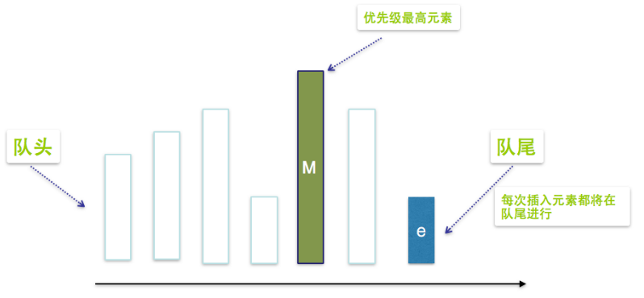
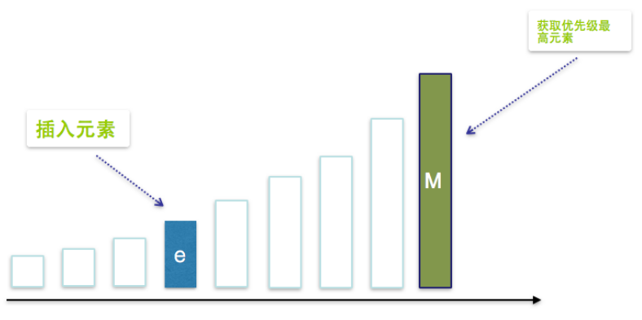
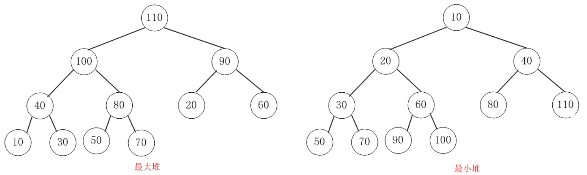

PriorityBlockingQueue
PriorityBlockingQueue是一个无界的基于数组的优先级阻塞队列，数组的默认长度是11，虽然指定了数组的长度，但是可以无限的扩充，直到资源消耗尽为止，每次出队都返回优先级别最高的或者最低的元素。默认情况下元素采用自然顺序升序排序，当然我们也可以通过构造函数来指定Comparator来对元素进行排序。需要注意的是PriorityBlockingQueue不能保证同优先级元素的顺序。
优先级队列PriorityQueue： 队列中每个元素都有一个优先级，出队的时候，优先级最高的先出。
一个支持优先级排序的无界阻塞队列：优先级高的先出队，优先级低的后出队
数据结构：数组+二叉堆：默认容量11，可指定初级容量，会自动扩容，最大容量是（Integer.MAX_VALUE - 8）
锁：ReentrantLock：存取是同一把锁
阻塞对象：NotEmpty：出队，队列为空时阻塞
入队：
- 不阻塞，永远返回成功，无界
- 根据比较器进行堆化（排序）自上而下
- 传入比较器对象就按照比较器的顺序排序
- 传入比较器对象就按照比较器的顺序排序
出队：
- 优先级最高的元素在堆顶（弹出堆顶元素）
- 弹出前比较两个子节点再进行堆化（自上而下）
应用场景：
- 业务办理排队叫号，VIP客户插队
- 电商抢购活动，会员级别高的用户优先抢购到商品
使用
1 | //创建优先级阻塞队列 Comparator为null,自然排序 |
如何实现一个优先级队列？
如何构造优先级队列
使用普通线性数组(无序)来表示优先级队列

- 执行插入操作时，直接将元素插入到数组末端，需要的成本为O(1),
- 获取优先级最高元素，我们需要遍历整个线性队列，匹配出优先级最高元素，需要的成本为o(n)
- 删除优先级最高元素，我们需要两个步骤，第一找出优先级最高元素，第二步删除优先级最高元素，然后将后面的元素依次迁移，填补空缺，需要的成本为O(n)+O(n)=O(n)
使用一个按顺序排列的有序向量实现优先级队列

- 获取优先级最高元素，O(1)
- 删除优先级最高元素，O(1)
- 插入一个元素，需要两个步骤，第一步我们需要找出要插的位置，这里我们可以使用二分查找，成本为O(logn)，第二步是插入元素之后，将其所有后继进行后移操作，成本为O(n)，所有总成本为O(logn)+O(n)=O(n)
二叉堆
完全二叉树：除了最后一行，其他行都满的二叉树，而且最后一行所有叶子节点都从左向右开始排序。
二叉堆：完全二叉树的基础上，加以一定的条件约束的一种特殊的二叉树。根据约束条件的不同，二叉堆又可以分为两个类型：
大顶堆和小顶堆。
- 大顶堆（最大堆）：父结点的键值总是大于或等于任何一个子节点的键值；
- 小顶堆（最小堆）：父结点的键值总是小于或等于任何一个子节点的键值。


...
...
00:00
00:00
Copyright 2021 sunfy.top ALL Rights Reserved